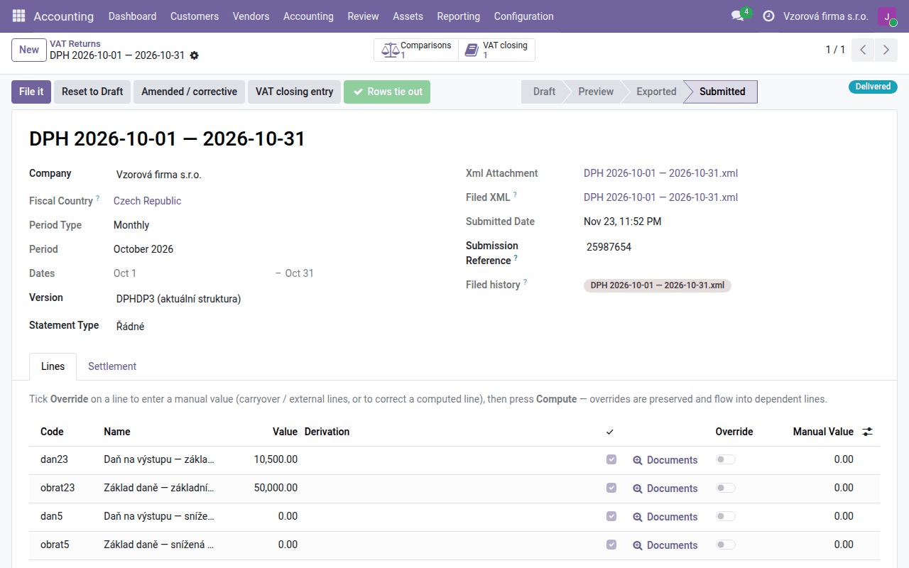
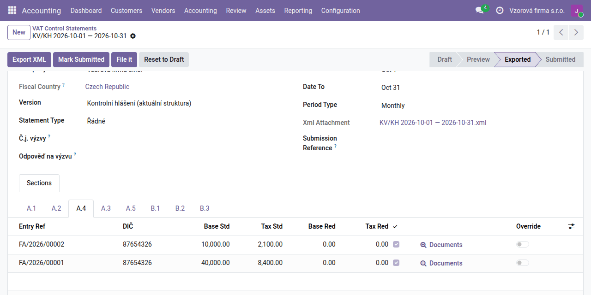
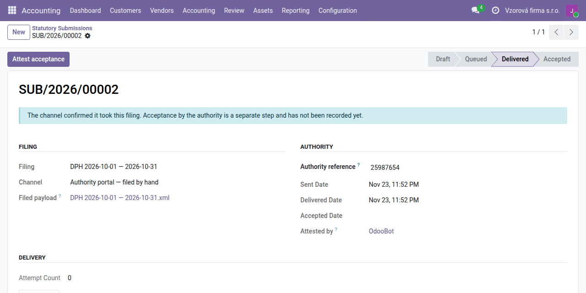
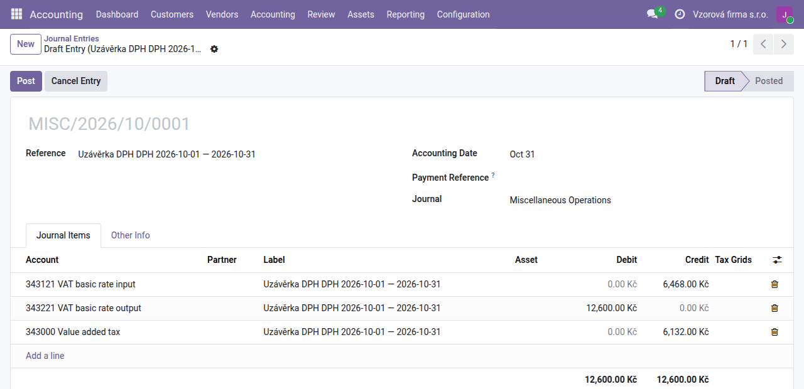

Task guide
Month-end VAT close
The monthly VAT return, control statement and EC sales list — computing them, checking them against the books, exporting the XML, filing, the VAT closing entry and locking the period.
| Country | Czech Republic |
|---|---|
| Edition | Odoo Community |
| Covers | l10n_cssk_vat_return_base, l10n_cz_vat_return, l10n_cssk_kv_kh_base, l10n_cz_kh, l10n_cssk_ec_summary_base, l10n_cz_ec_sales, l10n_cssk_submission_base, l10n_cz_statutory, l10n_cz_epo, l10n_cz_datadance |
What this guide is for
This guide walks through the monthly VAT close as the accountant of a monthly VAT payer does it: compute the VAT return (přiznání k DPH, form DPHDP3), the control statement (kontrolní hlášení, DPHKH1) and the EC sales list (souhrnné hlášení, DPHSHV), check them against the books, export the XML for filing, record the filing, post the closing of the 343 accounts and lock the period.
All three statements are in Accounting → Reporting → Statutory Reports. The documents they are computed from come from Daily bookkeeping; taxes and fiscal positions from Setting up account assignment.
The VAT return is due 25 days after the end of the period, and the deadline cannot be extended (§ 136 odst. 4 of the Tax Procedure Code); a legal person files the kontrolní hlášení for each month by the same day (§ 101e of the VAT Act).
Before the first close
Once, before the first filing:
- The company's DIČ — in the company data (Settings → Users & Companies → Companies), with the name, address, phone and e-mail. The XML header takes them from there.
- Tax office — Accounting → Configuration → Settings, block Czech / Slovak Localization, field Default tax authority: the regional office (for example Finanční úřad pro hlavní město Prahu), not a territorial workplace. Without it the export stops.
- Who signs and who prepared the filing — on the company form, tab EPO
podání: the oprávněná osoba and Sestavil. The company's main CZ-NACE
activity goes into NACE (main activity) on the company's contact; EPO
reports a return without it as a serious error. See
l10n_cz_statutory. - VAT closing accounts — in the same settings, block VAT Closing: the account the 343 accounts are cleared into (by default 343000 Value added tax), the rounding accounts (548000 and 648000) and the rounding tolerance. Empty accounts mean these defaults.
- Access — every Accountant can prepare the statements. Attesting a filing needs the role Statutory submissions: file — set it in Settings → Users & Companies → Users, field Accounting. That role includes the Accountant rights.
Which documents belong to the period
The VAT return does not select documents by one date:
| Side | A document belongs to the period by its |
|---|---|
| Output VAT (customer invoices, credit notes) | taxable supply date (DUZP) |
| Input VAT deduction (vendor bills) | accounting date — the period in which you post the bill and claim the deduction |
| Entries, bank, cash | accounting date |
With the Czech chart the accounting date of an invoice or bill follows its taxable supply date unless you change it. To claim the deduction of a vendor bill in a different period from the one you post it in, fill in VAT period declared on the bill; it takes precedence over the accounting date.
Before computing, check that every invoice with a DUZP in the month is posted, and every vendor bill whose deduction you want to claim.
VAT return
Accounting → Reporting → Statutory Reports → VAT Return → New:
- Period Type Monthly and the Period — Odoo offers the last finished month and fills in the dates.
- Version — DPHDP3 (aktuální struktura). There is one version for every period: the Financial Administration takes each return in the structure current on the day of filing.
- Statement Type Řádné.
- Click Compute.
The return moves to Preview and the Lines tab lists every row of the
form with its computed value. Code is the name the row has in the EPO XML
(obrat23 and dan23 are the base and the tax of row 1) and Name its
caption on the form, in Czech, most specific part first (for example
Základ daně — základní sazba — Dodání zboží nebo poskytnutí služby s místem
plnění v tuzemsku). The rows are listed in the order of the form.

On each row:
- Documents opens the journal items the row is computed from — and from there the invoice.
- ✓ is ticked when the row equals the sum of its journal items. The green Rows tie out button in the header says all of them do; otherwise a red Unreconciled rows button replaces it and lists the ones that don't. A difference means VAT was posted without a tax grid (a manual entry on 343, for example) or the other way round.
- Override and Manual Value — type a row's value by hand; Compute
keeps the override and carries it into the total rows. The deduction in
reduced amount (v krácené výši), rows 45, 52, 53 and 60 are not computed
and are entered this way
(
l10n_cz_vat_return).
The Settlement tab shows the excess deduction from the prior period, whether you carry it forward (Carry excess deduction), and the resulting To pay / (refund) — row 64 (vlastní daň) or row 65 (nadměrný odpočet).
When everything agrees, click Export XML. Odoo validates the file against the Financial Administration's official schema before saving it, attaches it to the return (field Xml Attachment) and moves the return to Exported. Amounts are exported in whole crowns.
Kontrolní hlášení
Accounting → Reporting → Statutory Reports → VAT Control Statement → New: Date From and Date To (the first and last day of the month), Version Kontrolní hlášení (aktuální struktura), Statement Type Řádné, Period Type Monthly and Compute.
The documents are split into the sections of the form, each on its own tab:
| Section | What it holds |
|---|---|
| A.1 | customer invoices under domestic reverse charge (§ 92a), with the kód předmětu plnění |
| A.2 | received supplies on which you declare the tax — acquisitions and services from the EU, services from outside the EU |
| A.4 | customer invoices with Czech VAT over 10,000 Kč including VAT, to customers with a Czech DIČ |
| A.5 | all other customer invoices with VAT, as one total |
| B.1 | vendor bills under domestic reverse charge (§ 92a) |
| B.2 | vendor bills with VAT over 10,000 Kč including VAT, under the supplier's document number |
| B.3 | all other vendor bills with VAT, as one total |
Every row of A.4 and B.2 carries the partner's DIČ, the document number, the
base and the VAT at each rate. A customer who is a VAT payer but lands in
A.5 instead of A.4 has no DIČ in Odoo — add it and compute again. The
10,000 Kč limit is measured on the whole document including VAT, and a credit
note counts by its absolute amount. An invoice without VAT to an EU customer
is not in the kontrolní hlášení at all — it belongs in the souhrnné hlášení.
How documents get into each section is described in
l10n_cz_kh.

Export XML stops and names the documents at fault when a row that needs one has no DIČ, no taxable supply date or (in A.1 and B.1) no kód předmětu plnění.
Before exporting, compare the totals with the return by eye: the bases and VAT of A.4 + A.5 against rows 1 and 2, of B.2 + B.3 against rows 40 and 41, and of A.2 against rows 3 to 6, 12 and 13.
Souhrnné hlášení
You file a souhrnné hlášení only for a month in which you supplied goods or
services to VAT payers in another EU state (the Intra-Community fiscal
position). Accounting → Reporting → Statutory Reports → EC Sales List → New,
the period, Version Souhrnné hlášení 2025, Statement Type Řádné
and Compute. Rows are grouped by the customer's VAT number and the
transaction code: goods (0), triangular trade (2) and services (3). Their
total agrees with rows 20 and 21 of the return. Details are in
l10n_cz_ec_sales.
Filing
File the exported XML on the Financial Administration's portal MOJE daně (the EPO application: load the file, check it and submit it) or through your data box. Then record in Odoo that it was filed:
- On the return (and the same on the kontrolní hlášení and the souhrnné hlášení) click File it. The list of the statement's submissions opens — the records of its filings; click New.
- Leave Channel on Authority portal — filed by hand, enter the portal's filing number (podací číslo) in Authority reference and click Attest filing. The submission moves to Delivered, the return to Submitted, and the history records who filed it.
- When the Financial Administration confirms the filing, attach the confirmation on the Receipts tab and click Attest acceptance.

Mark Submitted does the same without opening the submission — a Draft submission is created in the background so that receipts have somewhere to go. All filings are in Statutory Reports → Submissions.
Instead of uploading the file by hand, the channel EPO — Finanční správa
(signed, direct) signs the statement with the company's qualified
certificate and sends it to EPO from Odoo — first in test mode with Check
with EPO, then for real. Setting it up is described in
l10n_cz_epo.
The VAT closing entry
During the month the VAT sits on 343 sub-accounts per rate and direction (343121 input and 343221 output at the basic rate). On the exported or submitted return click VAT closing entry: Odoo prepares a draft entry, dated the last day of the period, that clears them into the settlement account. Check it and Post it.

| Document | Account | Debit | Credit |
|---|---|---|---|
| VAT closing (miscellaneous entry) | 343221 VAT basic rate output | 12,600 | |
| 343121 VAT basic rate input | 6,468 | ||
| 343000 Value added tax | 6,132 | ||
| Payment to the tax office (bank statement) | 343000 Value added tax | 6,132 | |
| 221004 Fio banka | 6,132 |
After the closing, the balance of 343000 is the vlastní daň of row 64 (on the debit side for a nadměrný odpočet, row 65). A small difference within the tolerance, from rounding the return to whole crowns, goes to 548000 or 648000; a larger one stops the closing — the return then does not agree with the books and the cause must be found (see the Unreconciled rows button on the return).
Match the payment on the statement in Reconcile on the Manual operation tab with account 343000 (Bank accounts).
Locking the period
After filing, set Tax Return Lock Date in Accounting → Accounting → Lock Dates to the last day of the month. Odoo then refuses to post or change anything that would change the VAT of the filed period (Closing a period). A bill that arrives later is posted into the open period.
Corrections after filing
A mistake in a filed return is corrected by a new return: on the filed return click Amended / corrective. A new return for the same period is created, linked to the original:
- Opravné — before the filing deadline; it replaces the original.
- Dodatečné — after the deadline; it requires Důvody zjištěny dne and files only the differences from the return it amends.
On the kontrolní hlášení the button is Opravné / následné: an opravné hlášení replaces the original before the deadline; a následné one, after it, repeats all the data of the period with the corrections applied and needs Důvody zjištěny dne or, when it answers a request of the tax office, the Č.j. výzvy. A následné souhrnné hlášení holds only the changed rows. Before correcting, move the tax lock date back, and restore it after posting the correcting document.